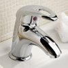

Limpieza ecológica
Sin toxicidad y biodegradables
···
Los productos ecológicos de limpieza del hogar respetan el medio ambiente y nuestra propia salud sin productos nocivos. A partir de materias primas vegetales renovables y minerales.
Se utilizan ingredientes a base de plantas como el aloe vera, aceite de coco, azucar, etc. Ingredientes renovables, como las plantas son mejores que todo el ozono de petróleo sucio.Los productos ecológicos están formulados sin toxicidad y son biodegradables
Se utilizan ingredientes a base de plantas como el aloe vera, aceite de coco, azucar, etc. Ingredientes renovables, como las plantas son mejores que todo el ozono de petróleo sucio.Los productos ecológicos están formulados sin toxicidad y son biodegradables. El plástico no tiene que venir de petróleo, Los envases provienen de la caña de azúcar.
-No conservantes sintéticos o fragancias en nuestros productos.
-No ingredientes de la química del cloro.
-No ingredientes en la fabricación de la ingeniería genética se utiliza.
-No ensayos con animales, ya sea directa o indirectamente.
Productos
Detergente ropa
Prendas delicadas
Suavizante
Lavavajillas

Limpiador WC

Limpiador cristales